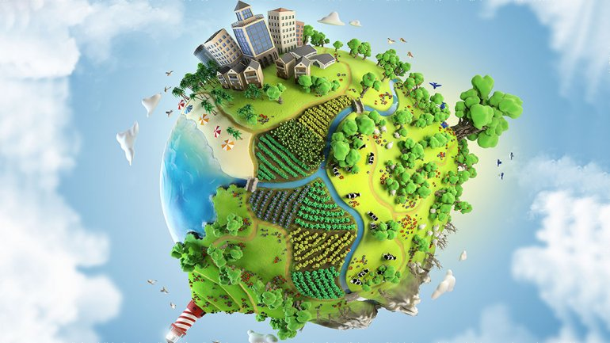
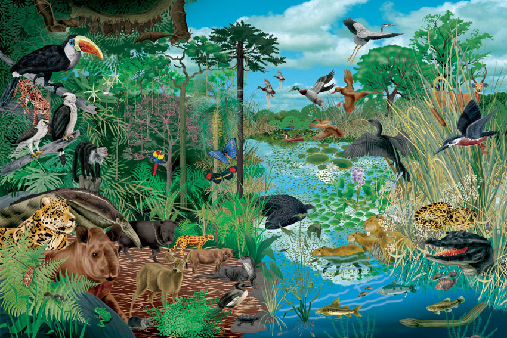

¿Qué es el medio ambiente?
El medio ambiente es el conjunto de componentes físicos, químicos, biológicos, de las personas o de la sociedad en su conjunto. Comprende el conjunto de valores naturales, sociales y culturales existentes en un lugar y en un momento determinado, que influyen en la vida del ser humano y en las generaciones futuras. Es decir, no se trata solo del espacio en el que se desarrolla la vida, sino que también comprende a los seres vivos, objetos, agua, suelo, aire y las relaciones entre ellos.
Por lo tanto, el medio ambiente es el área condicionada para la vida de diferentes seres vivos donde se incluyen elementos naturales, sociales, así como también componentes naturales; como lo es el suelo, el agua y el aire ubicados en un lugar y en un momento específico.
Definición de medio ambiente
La definición de medio ambiente es el espacio en el que se desarrolla la vida de los seres vivos y que permite la interacción de los mismos. Sin embargo este sistema no solo está conformado por seres vivos, sino también por elementos abióticos (sin vida) y por elementos artificiales.
Características del medio ambiente
Seres vivos: conjuntos de individuos de diferentes especies, tanto animales como vegetales, hacen lo propio hasta encontrar su espacio y establecer poblaciones, pues forman la acción directa en las alteraciones o mantenimiento de los procesos ambientales.

Agua: tanto la presencia como la ausencia de este líquido vital, es algo que afecta de manera
directa el equilibrio del medio ambiente, asimismo, corresponde a una sustancia clave para la
subsistencia de los organismos.
Aire: a partir de la composición química de este elemento, es que se pueden identificar estados
de contaminación. Por otra parte, este puede llegar a influir en la calidad del oxígeno que
participa en la respiración.


Temperatura: esta magnitud que hace referencia al calor que se mide por medio de un termómetro,
puede comprometer bastante el ambiente, consiguiendo que el aire se pueda percibir frío
o caliente. Puesto que algunos organismos únicamente sobreviven dentro de ciertos rangos
de temperatura, esta muchas veces puede ser sinónimo de deterioro.
Accidentes geográficos: se trata de los elementos que constituyen el relieve de una zona,
por ejemplo, los valles y montañas.